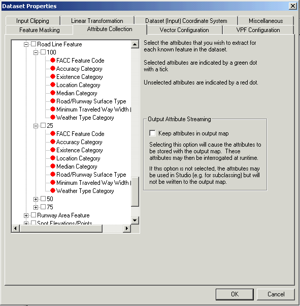

This panel is only active for VPF, SHP, Jeppesen and S-57 datasets.
The tree view lists the features present in the data, and within each feature, the list of attribute values available. A red or green dot indicates whether a given attribute has been included in the data.

For the attribute data to appear in the output map data, the "Keep attributes in output map" option must be selected. If this option is not selected, the choice of selections will be recorded but will have no effect on the output data.
The attributes of a feature can then be queried at runtime using the dataset() method of a TSLEntity.
Feature classing and rendering is arranged hierarchically in a family-tree style structure. Thus you can, for example, subclass "Airport Runway" by the "Runway Surface" attribute and get feature classes of the type "Airport Runway.ASPH" and "Airport Runway.GRAS". This is seen in the Feature Book. The rendering can be defined using an 'As parent' relationship between the base "Airport Runway" and the subclassed features. However, if this has been implemented, then there will never be a feature in the map of type "Airport Runway", assuming that all "Airport Runway" features have a "Runway Surface" attribute. The parent-child rendering configuration is flattened on map creation and only those features actually used are output to the map Therefore in the run-time it is not possible to modify the rendering of "Airport Runway", only "Airport Runway.ASPH". The inheritance is purely a Feature Book enhancement.
With this in mind, the Attribute Collection only works on 'leaf' nodes in the feature tree, as defined by the Feature Book section. In the above example, attribute collection will only be available on "Airport Runway.ASPH", not on "Airport Runway". Note that the feature hierarchy defined in the Feature Book is used, and that if features do not exist in the map, then they cannot be selected. This happens automatically and there is no user intervention or definition of feature/attribute relationships required.
If an existing Feature Book section is used, and the sub-classing does not match that used to generate the Feature Book, confusion can occur. In the above example, if no sub-classing was configured, the project would only contain features of type "Airport Runway", not "Airport Runway.ASPH". Since the attribute collection only works on leaf nodes of the tree defined the Feature Book, you would not see any attributes available in the Attribute Collection panel. Any attempt to enable attribute collection for non-leaf features or features which no longer exist will be cleared.
Therefore, it is recommended that you ensure that the sub-classing and feature book match, either by using an existing project, or creating a project from scratch. If you import an existing section, you will need to remove any unnecessary leaf nodes in the Feature Book by deleting them. This will then allow you to configure the Attribute Collection for the higher level features.